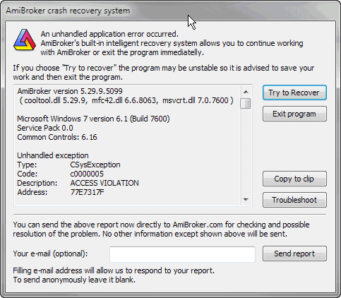

AmiBroker features a system of detecting and reporting bugs called "Crash recovery system." The name suggests that AmiBroker is now able to recover from such unexpected situations, and indeed it can!
How could this be done? Well, some tricks are needed to wrap the exception handling mechanism used by Windows :-)
Normally, when a Windows application performs some illegal memory access, illegal operation (for example, division by zero), or illegal instruction, the system pops up the dead-end message box saying "This program has performed an illegal operation and will be shut down." Now you have no choice - the application is terminated when you click the OK button.
AmiBroker's crash recovery system, introduced in v3.47 beta, intercepts the exception generated by Windows, and instead of the standard dead-end message box, it displays the following dialog:

As you can see, there is a window that displays important system information, and there are five buttons: Try to recover, Exit program, Copy to clip, Troubleshoot, and Send report. Clicking the Exit program button works exactly the same as clicking the "OK" button in the standard Windows dead-end message box. However, the Try to recover button offers brand new possibilities. If you click the Try to recover button, AmiBroker will try to recover from the error and continue running. In most cases, you will be able to save your work and modifications you have made, so you will not lose anything. In fact, you will be able to work normally. There are, however, some cases where recovery will not succeed, and AmiBroker may be unstable, so it is advised to just save your data and exit. It may also happen that this window will pop up a couple of times; then you should just click the Try to recover button several times. Copy to clip copies bug report details with system information to the clipboard, so you can paste this information into an e-mail program and send it to us.
The recovery function is quite nice, but the main purpose of this system is to find and fix problems in future versions, and this is why the most important function was provided: Send report. If the crash recovery window popped up on your screen, please click the Send report button before attempting to continue work. This will automatically send the details shown in the crash recovery window to us. Please do add your e-mail (in the Your e-mail field), so we can respond to your report. If you do not provide an e-mail address, the report will be sent anonymously, but we won't be able to respond to it or provide you any guidance.
AmiBroker version 5.29.9.5099
( cooltool.dll 5.29.9, mfc42.dll 6.6.8063, msvcrt.dll 7.0.7600 )Microsoft Windows 7 version 6.1 (Build 7600)
Service Pack 0.0
Common Controls: 6.16Unhandled exception
Type: CSysException
Code: c0000005
Description: ACCESS VIOLATION
Address: 77E7317FGraph0=C;
Sum(C,-C)
--------^Error 47.
Exception occurred during AFL formula execution at address: 77E7317F, code: C0000005
Detailed exception information:
Broker.exe caused an EXCEPTION_ACCESS_VIOLATION in module ntdll.dll at 0023:77E7317F, RtlImageNtHeader()+0411 byte(s)Call Stack:
0023:77E7317F ntdll.dll, RtlImageNtHeader()+0411 byte(s)
0023:77E73407 ntdll.dll, RtlImageNtHeader()+1059 byte(s)
0023:77E732F2 ntdll.dll, RtlImageNtHeader()+0782 byte(s)
CPU Registers:
EAX=071BD978 EBX=071BCDA8 ECX=00000000 EDX=00000000 ESI=071BD970
EDI=071B0000 EBP=00000000 ESP=0018F490 EIP=76D18FBA FLG=00010246
CS=0023 DS=002B SS=002B ES=002B FS=0053 GS=002BAFL Parser status:
Processing stage: EXCEPTION
Formula ID: 1995 (Unnamed 190)
Action 1 (INDICATOR)Additional information:
Number of stock loaded: 35
Currently selected stock: MCD
Number of quotes (current stock): 751Workspace:
Data source = (default), Data local mode = 1, NumBars = 250Preferences:
Data source = (local), Data local mode = 1, NumBars = 1000Command history:
2783 - Preferences settings--Preferences
2824 - Shows AFL formula editor--Formula EditorCache manager stats:
Number of list elements: 1
Number of map elements: 1
Hash table size: 5987Memory status:
MemoryLoad: 25 %
TotalPhys: 4194303K AvailPhys: 4194303K
TotalPageFile: 4194303K AvailPageFile: 4194303K
TotalVirtual: 4194176K AvailVirtual: 4029976KLast Windows message:
HWnd: 0x13075e
Msg: 0x0110
wParam: 0x0025092c
lParam: 0x00000000
As you can see, AmiBroker generates most important details itself for the bug report, including even some history of menu selections (Command history), but the most essential thing at this point is to provide the description of steps needed to reproduce the bug. It would be nice if you could also send us an e-mail with the description of steps required to reproduce the problem (what you did before the bug occurred, what special conditions must be met to reproduce it, maybe an AFL formula that you tried, and anything that you suppose might be important (even though AmiBroker automatically includes a few lines of the offending formula)). This is critical, since automatically generated information is very nice but cannot cover all the details.
Clicking Troubleshoot brings up the Troubleshooting page at http://www.amibroker.com/troubleshoot.html, which contains descriptions of the most common problems and how to solve them.
Some final notes: I have put a significant amount of work into making this system reliable; however, you should be aware that not all exception and/or system errors can be handled by this system, and it may happen that AmiBroker will not be able to recover from some fatal error. It is also possible that this system may not be able to intercept all low-level exceptions. In that case, just prepare the report yourself, giving me as many details as possible.
Please remember that the final goal is to make AmiBroker rock-solid and bug-free. This is what I am constantly working on.